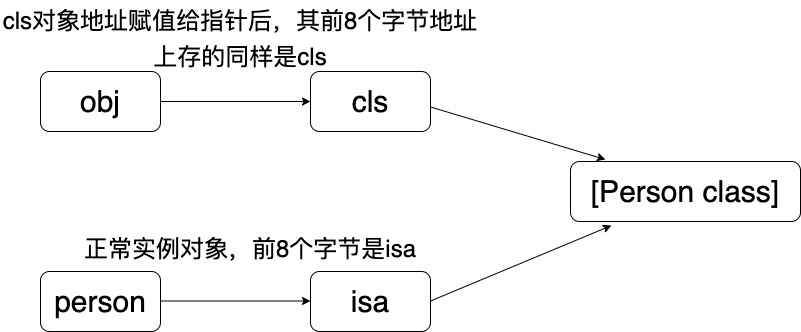
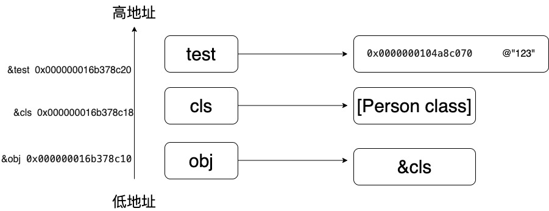
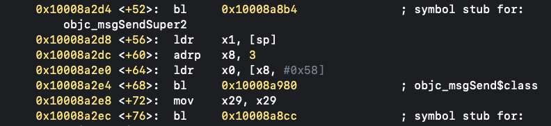
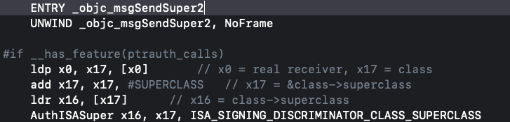
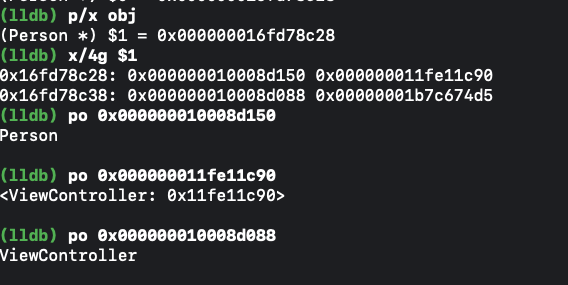

<!DOCTYPE html>


<html lang="en">
  

    <head>
      <meta charset="utf-8" />
        
      <meta
        name="viewport"
        content="width=device-width, initial-scale=1, maximum-scale=1"
      />
      <title>runtime特殊问题 |  ayer</title>
  <meta name="generator" content="hexo-theme-ayer">
      
      <link rel="shortcut icon" href="/favicon.ico" />
       
<link rel="stylesheet" href="/dist/main.css">

      <link
        rel="stylesheet"
        href="https://cdn.jsdelivr.net/gh/Shen-Yu/cdn/css/remixicon.min.css"
      />
      
<link rel="stylesheet" href="/css/custom.css">
 
      <script src="https://cdn.jsdelivr.net/npm/pace-js@1.0.2/pace.min.js"></script>
       
 

      <!-- mermaid -->
      
      <script src="https://cdn.jsdelivr.net/npm/mermaid@8.9.2/dist/mermaid.min.js"></script>
      
    <link rel="alternate" href="/atom.xml" title="ayer" type="application/atom+xml">
</head>
  </html>
</html>


<body>
  <div id="app">
    
      
    <main class="content on">
      <section class="outer">
  <article
  id="post-iOS学习/Runtime知识/runtime特殊问题"
  class="article article-type-post"
  itemscope
  itemprop="blogPost"
  data-scroll-reveal
>
  <div class="article-inner">
    
    <header class="article-header">
       
<h1 class="article-title sea-center" style="border-left:0" itemprop="name">
  runtime特殊问题
</h1>
 

      
    </header>
     
    <div class="article-meta">
      <a href="/2023/01/08/iOS%E5%AD%A6%E4%B9%A0/Runtime%E7%9F%A5%E8%AF%86/runtime%E7%89%B9%E6%AE%8A%E9%97%AE%E9%A2%98/" class="article-date">
  <time datetime="2023-01-08T14:41:07.000Z" itemprop="datePublished">2023-01-08</time>
</a> 
  <div class="article-category">
    <a class="article-category-link" href="/categories/Runtime/">Runtime</a>
  </div>
  
<div class="word_count">
    <span class="post-time">
        <span class="post-meta-item-icon">
            <i class="ri-quill-pen-line"></i>
            <span class="post-meta-item-text"> Word count:</span>
            <span class="post-count">1.8k</span>
        </span>
    </span>

    <span class="post-time">
        &nbsp; | &nbsp;
        <span class="post-meta-item-icon">
            <i class="ri-book-open-line"></i>
            <span class="post-meta-item-text"> Reading time≈</span>
            <span class="post-count">7 min</span>
        </span>
    </span>
</div>
 
    </div>
      
    <div class="tocbot"></div>


  
    <div class="article-entry" itemprop="articleBody">
       
  <h2 id="第一个问题"><a href="#第一个问题" class="headerlink" title="第一个问题"></a>第一个问题</h2><figure class="highlight plaintext"><table><tr><td class="gutter"><pre><span class="line">1</span><br><span class="line">2</span><br><span class="line">3</span><br><span class="line">4</span><br><span class="line">5</span><br><span class="line">6</span><br><span class="line">7</span><br><span class="line">8</span><br><span class="line">9</span><br><span class="line">10</span><br><span class="line">11</span><br><span class="line">12</span><br><span class="line">13</span><br><span class="line">14</span><br><span class="line">15</span><br><span class="line">16</span><br><span class="line">17</span><br><span class="line">18</span><br><span class="line">19</span><br><span class="line">20</span><br><span class="line">21</span><br><span class="line">22</span><br></pre></td><td class="code"><pre><span class="line">@interface Person:NSObject</span><br><span class="line">@property (copy, nonatomic) NSString *name;</span><br><span class="line">- (void)print;</span><br><span class="line">@end</span><br><span class="line">@implementation Person</span><br><span class="line">- (void)print</span><br><span class="line">&#123;</span><br><span class="line">    NSLog(@&quot;my name is %@&quot;, self-&gt;_name);</span><br><span class="line">&#125;</span><br><span class="line">@end</span><br><span class="line"></span><br><span class="line">//ViewController中</span><br><span class="line">- (void)viewDidLoad &#123;</span><br><span class="line">    [super viewDidLoad];</span><br><span class="line">    //NSString *test = @&quot;123&quot;;如果，前面有这个text对象，则实际会输出my name is 123</span><br><span class="line">    id cls = [Person class];</span><br><span class="line"></span><br><span class="line">    void *obj = &amp;cls;</span><br><span class="line"></span><br><span class="line">    [(__bridge id)obj print];</span><br><span class="line">    //实际输出my name is &lt;ViewController: 0x104b08020&gt;</span><br><span class="line">&#125;</span><br></pre></td></tr></table></figure>
<h3 id="print为什么能够调用成功？"><a href="#print为什么能够调用成功？" class="headerlink" title="print为什么能够调用成功？"></a><code>print</code>为什么能够调用成功？</h3><ul>
<li><p>示意图<br></p>
</li>
<li><p>将<code>[Person class]</code>的类对象cls的地址赋值给obj之后，在obj地址上的<code>前8个字节</code>的东西是cls的类对象的地址。这和正常实例化后的对象person一样，person所指向的地址在内存上前8个字节的地址是isa(类对象的地址)</p>
</li>
<li><p>在调用<code>print</code>方法的时候，就会去obj内存的前8个字节，取出该内存上的对象（正常结构体，则是其内存上前8个字节的isa指针），刚好是类对象，因此最终和调用实例对象方法一样可以调用成功。</p>
</li>
<li><p>在（__bridge id）的时候，实际上讲objc指针，转换成了<code>objc_object</code></p>
<figure class="highlight plaintext"><table><tr><td class="gutter"><pre><span class="line">1</span><br><span class="line">2</span><br><span class="line">3</span><br><span class="line">4</span><br></pre></td><td class="code"><pre><span class="line">struct objc_object &#123;</span><br><span class="line">    Class _Nonnull isa  OBJC_ISA_AVAILABILITY;</span><br><span class="line">&#125;;</span><br><span class="line">typedef struct objc_object *id;</span><br></pre></td></tr></table></figure>
<h3 id="为什么self-name变成了ViewController等其他内容"><a href="#为什么self-name变成了ViewController等其他内容" class="headerlink" title="为什么self.name变成了ViewController等其他内容"></a>为什么self.name变成了ViewController等其他内容</h3></li>
<li><p>栈上分配的临时对象的地址，是有高向低进行分配的,下面字符串的指针均指向常量区，其指针均相同，但是，栈给对象分配的指针地址，是不同的</p>
<figure class="highlight plaintext"><table><tr><td class="gutter"><pre><span class="line">1</span><br><span class="line">2</span><br><span class="line">3</span><br><span class="line">4</span><br></pre></td><td class="code"><pre><span class="line">// 0x0000000100998070 @&quot;123&quot;</span><br><span class="line">NSString *test = @&quot;123&quot;; //&amp;test 0x000000016f46cc20</span><br><span class="line">NSString *test1 = @&quot;123&quot;; // &amp;test1 0x000000016f46cc18</span><br><span class="line">NSString *test2 = @&quot;123&quot;; // &amp;test2 0x000000016f46cc10</span><br></pre></td></tr></table></figure></li>
<li><p>实际分配的示意图<br></p>
</li>
<li><p><code>Person</code>结构体的类型</p>
<figure class="highlight plaintext"><table><tr><td class="gutter"><pre><span class="line">1</span><br><span class="line">2</span><br><span class="line">3</span><br><span class="line">4</span><br><span class="line">5</span><br></pre></td><td class="code"><pre><span class="line">struct MJPerson_IMPL</span><br><span class="line"> &#123;</span><br><span class="line">    Class isa;</span><br><span class="line">     NSString *_name;</span><br><span class="line"> &#125;;</span><br></pre></td></tr></table></figure></li>
<li><p><code>NSLog(@&quot;my name is %@&quot;, self-&gt;_name);</code>调用该方法的本质，实际<code>person</code>的前8个字节是<code>cls</code>,而在<code>isa上加8个字节</code>后去取_name变量(结构体越往后面的地址会越高)，则根据分配的原则，会取到<code>test</code>,因此加test后，则会输出<code>my name is 123</code></p>
</li>
<li><p>不加局部对象，则会输出<code>my name is &lt;ViewController: 0x104b08020&gt;</code>,是由于<code>[super viewDidLoad]</code>造成的，因此在没有<code>test</code>局部变量后，实际上<code>isa上加8个字节</code>后，取到的是<code>self</code>的地址。最终则会输出<code>my name is &lt;ViewController: 0x104b08020&gt;</code></p>
<figure class="highlight plaintext"><table><tr><td class="gutter"><pre><span class="line">1</span><br><span class="line">2</span><br><span class="line">3</span><br><span class="line">4</span><br><span class="line">5</span><br><span class="line">6</span><br><span class="line">7</span><br><span class="line">8</span><br></pre></td><td class="code"><pre><span class="line"> //[super viewDidLoad] ,源码实际</span><br><span class="line"> struct abc = &#123;</span><br><span class="line">       self,</span><br><span class="line">       [ViewController class]</span><br><span class="line">   &#125;;</span><br><span class="line">//注意这里调用的是objc_msgSendSuper2，并非objc_msgSendSuper(这个要传入父类对象)</span><br><span class="line">objc_msgSendSuper2(abc, sel_registerName(&quot;viewDidLoad&quot;));</span><br><span class="line">//因此会隐式的生成abc结构体变量，其低地址是self，高地址是[ViewController class]</span><br></pre></td></tr></table></figure></li>
<li><p>注意，如果将<code>[super viewDidLoad]</code>屏蔽，则由于<code>isa地址加8字节后</code>，找不到任何东西，则会出现野指针的错误</p>
</li>
<li><p><code>objc_msgSendSuper2</code>可以通过调试发现,(x/4g,打出$1地址上每8个字节存的东西，打印4个),通过调试发现，后续的内存中,第一个是self，第二个是[ViewController class]，而非父类。</p>
<ul>
<li>但实际在源码中，<code>objc_msgSendSuper2</code>最终还是会取父类去调用</li>
<li>调试汇编<br></li>
<li>源码中，还是会取父类去调用<br></li>
<li>实际调试代码，确定是用objc_msgSendSuper2<br><h2 id="第二个问题"><a href="#第二个问题" class="headerlink" title="第二个问题"></a>第二个问题</h2><blockquote>
<p><code>&lt;objc/runtime.h&gt;</code>的APi</p>
</blockquote>
<h3 id="类相关"><a href="#类相关" class="headerlink" title="类相关"></a>类相关</h3></li>
<li>Class object_getClass(id obj)<ul>
<li>获取isa指向的Class</li>
</ul>
</li>
<li>Class object_setClass(id obj, Class cls)<ul>
<li>设置isa指向的Class,<strong>可以更改当前对象指向的isa</strong></li>
</ul>
</li>
<li>BOOL object_isClass(id obj)<ul>
<li>判断一个OC对象是否为Class</li>
</ul>
</li>
<li>BOOL class_isMetaClass(Class cls)<ul>
<li>判断一个Class是否为元类</li>
</ul>
</li>
<li>Class class_getSuperclass(Class cls)<ul>
<li>获取父类<h3 id="动态创建类"><a href="#动态创建类" class="headerlink" title="动态创建类"></a>动态创建类</h3></li>
</ul>
</li>
</ul>
</li>
<li><p><code>Class objc_allocateClassPair(Class superclass, const char *name, size_t extraBytes)</code></p>
<ul>
<li>动态创建一个类（参数：父类，类名，额外的内存空间）</li>
</ul>
</li>
<li><p><code>void objc_registerClassPair(Class cls)</code></p>
<ul>
<li>注册一个类（要在类注册之前添加成员变量），在你需要动态创建的类中，加入方法，协议，成员变量后，再去注册</li>
<li>注意，类注册完之后，类的成员变量会在<code>class_ro_t</code>中是不可变的，而方法，协议是在<code>class_rw_t</code>中，任何时候都是可以添加的<h4 id="成员变量"><a href="#成员变量" class="headerlink" title="成员变量"></a>成员变量</h4></li>
</ul>
</li>
<li><p><code>BOOL class_addIvar(Class cls, const char * name, size_t size, uint8_t alignment, const char * types)</code></p>
<ul>
<li>动态添加成员变量（<strong>已经注册的类是不能动态添加成员变量的</strong>）</li>
<li>例如<code>class_addIvar(newCls, &quot;_age&quot;, 4, 1, @encode(int));</code>添加一个age的成员变量,设置和取值，可以通过kvc实现<code>[dog setValue:@10 forKey:@&quot;_age&quot;];</code><h4 id="属性"><a href="#属性" class="headerlink" title="属性"></a>属性</h4></li>
</ul>
</li>
<li><p><code>BOOL class_addProperty(Class cls, const char *name, const objc_property_attribute_t *attributes,unsigned int attributeCount)</code></p>
<ul>
<li>动态添加属性</li>
</ul>
</li>
<li><p><code>void class_replaceProperty(Class cls, const char *name, const objc_property_attribute_t *attributes,unsigned int attributeCount)</code></p>
<ul>
<li>动态替换属性<h4 id="方法"><a href="#方法" class="headerlink" title="方法"></a>方法</h4></li>
</ul>
</li>
<li><p><code>BOOL class_addMethod(Class cls, SEL name, IMP imp, const char *types)</code></p>
<ul>
<li>动态添加方法</li>
</ul>
</li>
<li><p><code>IMP class_replaceMethod(Class cls, SEL name, IMP imp, const char *types)</code></p>
<ul>
<li>动态替换方法<h3 id="成员变量相关"><a href="#成员变量相关" class="headerlink" title="成员变量相关"></a>成员变量相关</h3></li>
</ul>
</li>
<li><p><code>Ivar class_getInstanceVariable(Class cls, const char *name)</code></p>
<ul>
<li>获取一个实例变量信息</li>
<li>获取成员变量的相关信息<ul>
<li><code>const char *ivar_getName(Ivar v)</code></li>
<li><code>const char *ivar_getTypeEncoding(Ivar v)</code></li>
</ul>
</li>
<li>设置和获取成员变量的值<ul>
<li><code>void object_setIvar(id obj, Ivar ivar, id value)</code><ul>
<li>如果设置基本变量,<code>object_setIvar(person, weightVar, (__bridge id)(void *)20)</code>将基本类型转成对象</li>
</ul>
</li>
<li><code>id object_getIvar(id obj, Ivar ivar)</code></li>
</ul>
</li>
</ul>
</li>
<li><p><code>Ivar *class_copyIvarList(Class cls, unsigned int *outCount)</code></p>
<ul>
<li>拷贝实例变量列表（最后需要调用free释放）<h3 id="属性相关"><a href="#属性相关" class="headerlink" title="属性相关"></a>属性相关</h3></li>
</ul>
</li>
<li><p><code>objc_property_t class_getProperty(Class cls, const char *name)</code></p>
<ul>
<li>获取一个属性</li>
<li>获取属性的一些信息<ul>
<li><code>const char *property_getName(objc_property_t property)</code></li>
<li><code>const char *property_getAttributes(objc_property_t property)</code></li>
</ul>
</li>
</ul>
</li>
<li><p><code>objc_property_t *class_copyPropertyList(Class cls, unsigned int *outCount)</code></p>
<ul>
<li>拷贝属性列表（最后需要调用free释放）<h3 id="方法相关"><a href="#方法相关" class="headerlink" title="方法相关"></a>方法相关</h3></li>
</ul>
</li>
<li><p>获得一个实例方法、类方法</p>
<ul>
<li><code>Method class_getInstanceMethod(Class cls, SEL name)</code></li>
<li><code>Method class_getClassMethod(Class cls, SEL name)</code></li>
<li>获取方法的相关信息（带有copy的需要调用free去释放）<ul>
<li><code>SEL method_getName(Method m)</code></li>
<li><code>IMP method_getImplementation(Method m)</code></li>
<li><code>const char *method_getTypeEncoding(Method m)</code></li>
<li><code>unsigned int method_getNumberOfArguments(Method m)</code></li>
<li><code>char *method_copyReturnType(Method m)</code></li>
<li><code>char *method_copyArgumentType(Method m, unsigned int index)</code></li>
</ul>
</li>
</ul>
</li>
<li><p>方法实现相关操作</p>
<ul>
<li><code>IMP class_getMethodImplementation(Class cls, SEL name) </code></li>
<li><code>IMP method_setImplementation(Method m, IMP imp)</code></li>
<li><code>void method_exchangeImplementations(Method m1, Method m2) </code><ul>
<li>源码<figure class="highlight plaintext"><table><tr><td class="gutter"><pre><span class="line">1</span><br><span class="line">2</span><br><span class="line">3</span><br><span class="line">4</span><br><span class="line">5</span><br><span class="line">6</span><br><span class="line">7</span><br><span class="line">8</span><br><span class="line">9</span><br><span class="line">10</span><br><span class="line">11</span><br><span class="line">12</span><br><span class="line">13</span><br><span class="line">14</span><br><span class="line">15</span><br><span class="line">16</span><br><span class="line">17</span><br><span class="line">18</span><br><span class="line">19</span><br><span class="line">20</span><br><span class="line">21</span><br><span class="line">22</span><br><span class="line">23</span><br><span class="line">24</span><br><span class="line">25</span><br><span class="line">26</span><br><span class="line">27</span><br><span class="line">28</span><br><span class="line">29</span><br><span class="line">30</span><br></pre></td><td class="code"><pre><span class="line">void method_exchangeImplementations(Method m1Signed, Method m2Signed)</span><br><span class="line">&#123;</span><br><span class="line"> if (!m1Signed  ||  !m2Signed) return;</span><br><span class="line"></span><br><span class="line">method_t *m1 = _method_auth(m1Signed);</span><br><span class="line"> method_t *m2 = _method_auth(m2Signed);</span><br><span class="line"></span><br><span class="line">mutex_locker_t lock(runtimeLock);</span><br><span class="line"></span><br><span class="line">//进行imp的交换</span><br><span class="line">IMP imp1 = m1-&gt;imp(false);</span><br><span class="line">IMP imp2 = m2-&gt;imp(false);</span><br><span class="line">SEL sel1 = m1-&gt;name();</span><br><span class="line">SEL sel2 = m2-&gt;name();</span><br><span class="line"></span><br><span class="line">m1-&gt;setImp(imp2);</span><br><span class="line">m2-&gt;setImp(imp1);</span><br><span class="line"></span><br><span class="line"></span><br><span class="line">// RR/AWZ updates are slow because class is unknown</span><br><span class="line">// Cache updates are slow because class is unknown</span><br><span class="line">// fixme build list of classes whose Methods are known externally?</span><br><span class="line">//这里会清除方法内的所有缓存</span><br><span class="line">flushCaches(nil, __func__, [sel1, sel2, imp1, imp2](Class c)&#123;</span><br><span class="line">  return c-&gt;cache.shouldFlush(sel1, imp1) || c-         &gt;cache.shouldFlush(sel2, imp2);</span><br><span class="line">&#125;);</span><br><span class="line"></span><br><span class="line">adjustCustomFlagsForMethodChange(nil, m1);</span><br><span class="line">adjustCustomFlagsForMethodChange(nil, m2);</span><br><span class="line">&#125;</span><br></pre></td></tr></table></figure></li>
</ul>
</li>
</ul>
</li>
<li><p>拷贝方法列表（最后需要调用free释放）</p>
</li>
<li><p><code>Method *class_copyMethodList(Class cls, unsigned int *outCount)</code></p>
</li>
<li><p>选择器相关</p>
<ul>
<li><code>const char *sel_getName(SEL sel)</code></li>
<li><code>SEL sel_registerName(const char *str)</code></li>
</ul>
</li>
<li><p>用block作为方法实现</p>
<ul>
<li><code>IMP imp_implementationWithBlock(id block)</code></li>
<li><code>id imp_getBlock(IMP anImp)</code></li>
<li><code>BOOL imp_removeBlock(IMP anImp)</code><h3 id="runtime面试题"><a href="#runtime面试题" class="headerlink" title="runtime面试题"></a>runtime面试题</h3></li>
</ul>
</li>
</ul>
<ol>
<li>什么是Runtime<ul>
<li>OC是一门动态性比较强的编程语言，允许很多操作推迟到程序运行时再进行OC的动态性就是由Runtime来支撑和实现的，<code>Runtime</code>是一套C语言的API，封装了很多动态性相关的函数平时编写的OC代码，底层都是转换成了<code>Runtime API</code>进行调用</li>
</ul>
</li>
<li>具体应用<ol>
<li>利用关联对象（AssociatedObject）给分类添加属性</li>
<li>遍历类的所有成员变量（利用kvc修改私有属性，字典转模型，自动归档接档）</li>
<li>交换方法实现（交换系统的方法）</li>
<li>利用消息转发机制解决方法找不到的异常问题，(重写<code>forwardInvocation:</code>实现)</li>
</ol>
</li>
</ol>
 
      <!-- reward -->
      
    </div>
    

    <!-- copyright -->
    
    <div class="declare">
      <ul class="post-copyright">
        <li>
          <i class="ri-copyright-line"></i>
          <strong>Copyright： </strong>
          
          Copyright is owned by the author. For commercial reprints, please contact the author for authorization. For non-commercial reprints, please indicate the source.
          
        </li>
      </ul>
    </div>
    
    <footer class="article-footer">
       
<div class="share-btn">
      <span class="share-sns share-outer">
        <i class="ri-share-forward-line"></i>
        分享
      </span>
      <div class="share-wrap">
        <i class="arrow"></i>
        <div class="share-icons">
          
          <a class="weibo share-sns" href="javascript:;" data-type="weibo">
            <i class="ri-weibo-fill"></i>
          </a>
          <a class="weixin share-sns wxFab" href="javascript:;" data-type="weixin">
            <i class="ri-wechat-fill"></i>
          </a>
          <a class="qq share-sns" href="javascript:;" data-type="qq">
            <i class="ri-qq-fill"></i>
          </a>
          <a class="douban share-sns" href="javascript:;" data-type="douban">
            <i class="ri-douban-line"></i>
          </a>
          <!-- <a class="qzone share-sns" href="javascript:;" data-type="qzone">
            <i class="icon icon-qzone"></i>
          </a> -->
          
          <a class="facebook share-sns" href="javascript:;" data-type="facebook">
            <i class="ri-facebook-circle-fill"></i>
          </a>
          <a class="twitter share-sns" href="javascript:;" data-type="twitter">
            <i class="ri-twitter-fill"></i>
          </a>
          <a class="google share-sns" href="javascript:;" data-type="google">
            <i class="ri-google-fill"></i>
          </a>
        </div>
      </div>
</div>

<div class="wx-share-modal">
    <a class="modal-close" href="javascript:;"><i class="ri-close-circle-line"></i></a>
    <p>扫一扫，分享到微信</p>
    <div class="wx-qrcode">
      
    </div>
</div>

<div id="share-mask"></div>  
    </footer>
  </div>

   
  <nav class="article-nav">
    
      <a href="/2023/01/09/iOS%E5%AD%A6%E4%B9%A0/Runtime%E7%9F%A5%E8%AF%86/%E4%B8%AD%E9%97%B4%E4%BB%A3%E7%A0%81/" class="article-nav-link">
        <strong class="article-nav-caption">上一篇</strong>
        <div class="article-nav-title">
          
            中间代码（IR）
          
        </div>
      </a>
    
    
      <a href="/2023/01/08/iOS%E5%AD%A6%E4%B9%A0/Runtime%E7%9F%A5%E8%AF%86/isKindofclass%E5%92%8CisMemberofClass/" class="article-nav-link">
        <strong class="article-nav-caption">下一篇</strong>
        <div class="article-nav-title">isKindofClass和isMemberofClass</div>
      </a>
    
  </nav>

   
<!-- valine评论 -->
<div id="vcomments-box">
  <div id="vcomments"></div>
</div>
<script src="//cdn1.lncld.net/static/js/3.0.4/av-min.js"></script>
<script src="https://cdn.jsdelivr.net/npm/valine@1.4.14/dist/Valine.min.js"></script>
<script>
  new Valine({
    el: "#vcomments",
    app_id: "",
    app_key: "",
    path: window.location.pathname,
    avatar: "monsterid",
    placeholder: "给我的文章加点评论吧~",
    recordIP: true,
  });
  const infoEle = document.querySelector("#vcomments .info");
  if (infoEle && infoEle.childNodes && infoEle.childNodes.length > 0) {
    infoEle.childNodes.forEach(function (item) {
      item.parentNode.removeChild(item);
    });
  }
</script>
<style>
  #vcomments-box {
    padding: 5px 30px;
  }

  @media screen and (max-width: 800px) {
    #vcomments-box {
      padding: 5px 0px;
    }
  }

  #vcomments-box #vcomments {
    background-color: #fff;
  }

  .v .vlist .vcard .vh {
    padding-right: 20px;
  }

  .v .vlist .vcard {
    padding-left: 10px;
  }
</style>

 
   
     
</article>

</section>
      <footer class="footer">
  <div class="outer">
    <ul>
      <li>
        Copyrights &copy;
        2021-2023
        <i class="ri-heart-fill heart_icon"></i> jingbo
      </li>
    </ul>
    <ul>
      <li>
        
        
        
        Powered by <a href="https://hexo.io" target="_blank">Hexo</a>
        <span class="division">|</span>
        Theme - <a href="https://github.com/Shen-Yu/hexo-theme-ayer" target="_blank">Ayer</a>
        
      </li>
    </ul>
    <ul>
      <li>
        
        
        <span>
  <span><i class="ri-user-3-fill"></i>Visitors:<span id="busuanzi_value_site_uv"></span></span>
  <span class="division">|</span>
  <span><i class="ri-eye-fill"></i>Views:<span id="busuanzi_value_page_pv"></span></span>
</span>
        
      </li>
    </ul>
    <ul>
      
    </ul>
    <ul>
      
    </ul>
    <ul>
      <li>
        <!-- cnzz统计 -->
        
        <script type="text/javascript" src='https://s9.cnzz.com/z_stat.php?id=1278069914&amp;web_id=1278069914'></script>
        
      </li>
    </ul>
  </div>
</footer>
      <div class="float_btns">
        <div class="totop" id="totop">
  <i class="ri-arrow-up-line"></i>
</div>

<div class="todark" id="todark">
  <i class="ri-moon-line"></i>
</div>

      </div>
    </main>
    <aside class="sidebar on">
      <button class="navbar-toggle"></button>
<nav class="navbar">
  
  <div class="logo">
    <a href="/"></a>
  </div>
  
  <ul class="nav nav-main">
    
    <li class="nav-item">
      <a class="nav-item-link" href="/">主页</a>
    </li>
    
    <li class="nav-item">
      <a class="nav-item-link" href="/archives">归档</a>
    </li>
    
    <li class="nav-item">
      <a class="nav-item-link" href="/categories">分类</a>
    </li>
    
    <li class="nav-item">
      <a class="nav-item-link" href="/tags">标签</a>
    </li>
    
    <li class="nav-item">
      <a class="nav-item-link" href="/photos">相册</a>
    </li>
    
  </ul>
</nav>
<nav class="navbar navbar-bottom">
  <ul class="nav">
    <li class="nav-item">
      
      <a class="nav-item-link nav-item-search"  title="Search">
        <i class="ri-search-line"></i>
      </a>
      
      
      <a class="nav-item-link" target="_blank" href="/atom.xml" title="RSS Feed">
        <i class="ri-rss-line"></i>
      </a>
      
    </li>
  </ul>
</nav>
<div class="search-form-wrap">
  <div class="local-search local-search-plugin">
  <input type="search" id="local-search-input" class="local-search-input" placeholder="Search...">
  <div id="local-search-result" class="local-search-result"></div>
</div>
</div>
    </aside>
    <div id="mask"></div>

<!-- #reward -->
<div id="reward">
  <span class="close"><i class="ri-close-line"></i></span>
  <p class="reward-p"><i class="ri-cup-line"></i>请我喝杯咖啡吧~</p>
  <div class="reward-box">
    
    <div class="reward-item">
      
      <span class="reward-type">支付宝</span>
    </div>
    
    
    <div class="reward-item">
      
      <span class="reward-type">微信</span>
    </div>
    
  </div>
</div>
    
<script src="/js/jquery-2.0.3.min.js"></script>
 
<script src="/js/lazyload.min.js"></script>

<!-- Tocbot -->
 
<script src="/js/tocbot.min.js"></script>

<script>
  tocbot.init({
    tocSelector: ".tocbot",
    contentSelector: ".article-entry",
    headingSelector: "h1, h2, h3, h4, h5, h6",
    hasInnerContainers: true,
    scrollSmooth: true,
    scrollContainer: "main",
    positionFixedSelector: ".tocbot",
    positionFixedClass: "is-position-fixed",
    fixedSidebarOffset: "auto",
  });
</script>

<script src="https://cdn.jsdelivr.net/npm/jquery-modal@0.9.2/jquery.modal.min.js"></script>
<link
  rel="stylesheet"
  href="https://cdn.jsdelivr.net/npm/jquery-modal@0.9.2/jquery.modal.min.css"
/>
<script src="https://cdn.jsdelivr.net/npm/justifiedGallery@3.7.0/dist/js/jquery.justifiedGallery.min.js"></script>

<script src="/dist/main.js"></script>

<!-- ImageViewer -->
 <!-- Root element of PhotoSwipe. Must have class pswp. -->
<div class="pswp" tabindex="-1" role="dialog" aria-hidden="true">

    <!-- Background of PhotoSwipe. 
         It's a separate element as animating opacity is faster than rgba(). -->
    <div class="pswp__bg"></div>

    <!-- Slides wrapper with overflow:hidden. -->
    <div class="pswp__scroll-wrap">

        <!-- Container that holds slides. 
            PhotoSwipe keeps only 3 of them in the DOM to save memory.
            Don't modify these 3 pswp__item elements, data is added later on. -->
        <div class="pswp__container">
            <div class="pswp__item"></div>
            <div class="pswp__item"></div>
            <div class="pswp__item"></div>
        </div>

        <!-- Default (PhotoSwipeUI_Default) interface on top of sliding area. Can be changed. -->
        <div class="pswp__ui pswp__ui--hidden">

            <div class="pswp__top-bar">

                <!--  Controls are self-explanatory. Order can be changed. -->

                <div class="pswp__counter"></div>

                <button class="pswp__button pswp__button--close" title="Close (Esc)"></button>

                <button class="pswp__button pswp__button--share" style="display:none" title="Share"></button>

                <button class="pswp__button pswp__button--fs" title="Toggle fullscreen"></button>

                <button class="pswp__button pswp__button--zoom" title="Zoom in/out"></button>

                <!-- Preloader demo http://codepen.io/dimsemenov/pen/yyBWoR -->
                <!-- element will get class pswp__preloader--active when preloader is running -->
                <div class="pswp__preloader">
                    <div class="pswp__preloader__icn">
                        <div class="pswp__preloader__cut">
                            <div class="pswp__preloader__donut"></div>
                        </div>
                    </div>
                </div>
            </div>

            <div class="pswp__share-modal pswp__share-modal--hidden pswp__single-tap">
                <div class="pswp__share-tooltip"></div>
            </div>

            <button class="pswp__button pswp__button--arrow--left" title="Previous (arrow left)">
            </button>

            <button class="pswp__button pswp__button--arrow--right" title="Next (arrow right)">
            </button>

            <div class="pswp__caption">
                <div class="pswp__caption__center"></div>
            </div>

        </div>

    </div>

</div>

<link rel="stylesheet" href="https://cdn.jsdelivr.net/npm/photoswipe@4.1.3/dist/photoswipe.min.css">
<link rel="stylesheet" href="https://cdn.jsdelivr.net/npm/photoswipe@4.1.3/dist/default-skin/default-skin.min.css">
<script src="https://cdn.jsdelivr.net/npm/photoswipe@4.1.3/dist/photoswipe.min.js"></script>
<script src="https://cdn.jsdelivr.net/npm/photoswipe@4.1.3/dist/photoswipe-ui-default.min.js"></script>

<script>
    function viewer_init() {
        let pswpElement = document.querySelectorAll('.pswp')[0];
        let $imgArr = document.querySelectorAll(('.article-entry img:not(.reward-img)'))

        $imgArr.forEach(($em, i) => {
            $em.onclick = () => {
                // slider展开状态
                // todo: 这样不好，后面改成状态
                if (document.querySelector('.left-col.show')) return
                let items = []
                $imgArr.forEach(($em2, i2) => {
                    let img = $em2.getAttribute('data-idx', i2)
                    let src = $em2.getAttribute('data-target') || $em2.getAttribute('src')
                    let title = $em2.getAttribute('alt')
                    // 获得原图尺寸
                    const image = new Image()
                    image.src = src
                    items.push({
                        src: src,
                        w: image.width || $em2.width,
                        h: image.height || $em2.height,
                        title: title
                    })
                })
                var gallery = new PhotoSwipe(pswpElement, PhotoSwipeUI_Default, items, {
                    index: parseInt(i)
                });
                gallery.init()
            }
        })
    }
    viewer_init()
</script> 
<!-- MathJax -->
 <script type="text/x-mathjax-config">
  MathJax.Hub.Config({
      tex2jax: {
          inlineMath: [ ['$','$'], ["\\(","\\)"]  ],
          processEscapes: true,
          skipTags: ['script', 'noscript', 'style', 'textarea', 'pre', 'code']
      }
  });

  MathJax.Hub.Queue(function() {
      var all = MathJax.Hub.getAllJax(), i;
      for(i=0; i < all.length; i += 1) {
          all[i].SourceElement().parentNode.className += ' has-jax';
      }
  });
</script>

<script src="https://cdn.jsdelivr.net/npm/mathjax@2.7.6/unpacked/MathJax.js?config=TeX-AMS-MML_HTMLorMML"></script>
<script>
  var ayerConfig = {
    mathjax: true,
  };
</script>

<!-- Katex -->

<!-- busuanzi  -->
 
<script src="/js/busuanzi-2.3.pure.min.js"></script>
 
<!-- ClickLove -->
 
<script src="/js/clickLove.js"></script>
 
<!-- ClickBoom1 -->

<!-- ClickBoom2 -->

<!-- CodeCopy -->
 
<link rel="stylesheet" href="/css/clipboard.css">
 <script src="https://cdn.jsdelivr.net/npm/clipboard@2/dist/clipboard.min.js"></script>
<script>
  function wait(callback, seconds) {
    var timelag = null;
    timelag = window.setTimeout(callback, seconds);
  }
  !function (e, t, a) {
    var initCopyCode = function(){
      var copyHtml = '';
      copyHtml += '<button class="btn-copy" data-clipboard-snippet="">';
      copyHtml += '<i class="ri-file-copy-2-line"></i><span>COPY</span>';
      copyHtml += '</button>';
      $(".highlight .code pre").before(copyHtml);
      $(".article pre code").before(copyHtml);
      var clipboard = new ClipboardJS('.btn-copy', {
        target: function(trigger) {
          return trigger.nextElementSibling;
        }
      });
      clipboard.on('success', function(e) {
        let $btn = $(e.trigger);
        $btn.addClass('copied');
        let $icon = $($btn.find('i'));
        $icon.removeClass('ri-file-copy-2-line');
        $icon.addClass('ri-checkbox-circle-line');
        let $span = $($btn.find('span'));
        $span[0].innerText = 'COPIED';
        
        wait(function () { // 等待两秒钟后恢复
          $icon.removeClass('ri-checkbox-circle-line');
          $icon.addClass('ri-file-copy-2-line');
          $span[0].innerText = 'COPY';
        }, 2000);
      });
      clipboard.on('error', function(e) {
        e.clearSelection();
        let $btn = $(e.trigger);
        $btn.addClass('copy-failed');
        let $icon = $($btn.find('i'));
        $icon.removeClass('ri-file-copy-2-line');
        $icon.addClass('ri-time-line');
        let $span = $($btn.find('span'));
        $span[0].innerText = 'COPY FAILED';
        
        wait(function () { // 等待两秒钟后恢复
          $icon.removeClass('ri-time-line');
          $icon.addClass('ri-file-copy-2-line');
          $span[0].innerText = 'COPY';
        }, 2000);
      });
    }
    initCopyCode();
  }(window, document);
</script>
 
<!-- CanvasBackground -->
 
<script src="/js/dz.js"></script>
 
<script>
  if (window.mermaid) {
    mermaid.initialize({ theme: "forest" });
  }
</script>


    
    <div id="music">
    
    
    
    <iframe frameborder="no" border="1" marginwidth="0" marginheight="0" width="200" height="86"
        src="//music.163.com/outchain/player?type=2&id=22707022&auto=1&height=66"></iframe>
</div>

<style>
    #music {
        position: fixed;
        right: 15px;
        bottom: 0;
        z-index: 998;
    }
</style>
    
  </div>
<script src="/live2dw/lib/L2Dwidget.min.js?094cbace49a39548bed64abff5988b05"></script><script>L2Dwidget.init({"pluginRootPath":"live2dw/","pluginJsPath":"lib/","pluginModelPath":"assets/","tagMode":false,"debug":false,"model":{"show":true,"jsonPath":"ak12_3302"},"display":{"position":"right","width":150,"height":300,"vOffset":100},"mobile":{"show":true},"react":{"opacity":0.7},"log":false});</script></body>

</html>